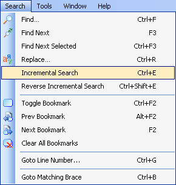
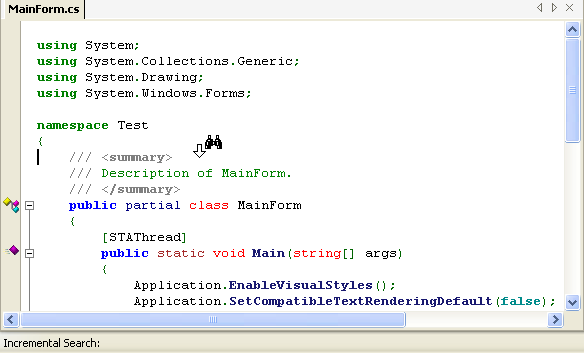
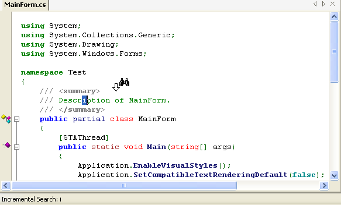
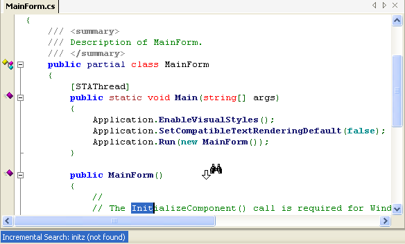
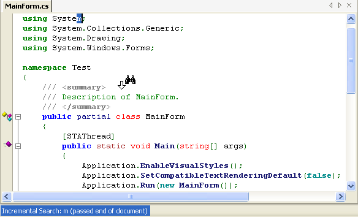
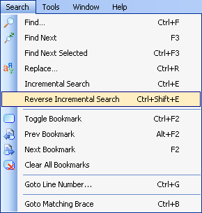

SharpDevelop 2.1 now supports incremental searching. For those of you who have used Visual Studio, the incremental search works in a similar way. First you enter incremental search mode, then type in the search text. As you type in each character the document is searched from the current cursor position and the first match it finds is highlighted.
Position the cursor at the location where you want the search to start from.
Enable the incremental search either by selecting the Incremental Search from the Search menu or by using the keyboard shortcut Ctrl+E.

The mouse cursor over the text editor will then be changed to the Incremental Search icon to indicate that you have enabled the search.
The status bar text will change to "Incremental Search".

Type in a character and the first match below the current cursor position will be highlighted. The search text is also displayed in the status bar.

As you type in characters the search text is changed and matching text is highlighted. If the search text cannot be found the status bar text will show an error message.

The search is case insensitive if all the characters of the search text are lower case. If any character is upper case then the search will be case sensitive.
If the first character typed in does not match anything below the cursor but can be found above the cursor position, at the start of the document, then the match will be highlighted and the status bar will show a warning message informing you that the end of the document has been passed. In the screenshot below the cursor was put at the end of the document and then the incremental search was started.

To stop the incremental search press the Escape or Enter key.
The reverse incremental search will search from the current cursor position to the start of the document.
Enable the reverse incremental search either by selecting the Reverse Incremental Search from the Search menu or by using the keyboard shortcut Ctrl+Shift+E.

The mouse cursor will then be changed to the Reverse Incremental Search icon to indicate that you have enabled the search. The status bar text will also be changed to "Reverse Incremental Search".
As you type a character the matching text will be highlighted and the search text will be shown in the status bar.
To stop searching press the Escape or Enter key.
The differences between the SharpDevelop's and Visual Studio's incremental search.
| Feature | SharpDevelop | Visual Studio |
|---|---|---|
| Shortcuts | Ctrl+E, Ctrl+Shift+E | Ctrl+I, Ctrl+Shift+I |
| Case sensitive search | An upper case character in the search string makes the search case sensitive. | Select the Match case option in the Find dialog. |